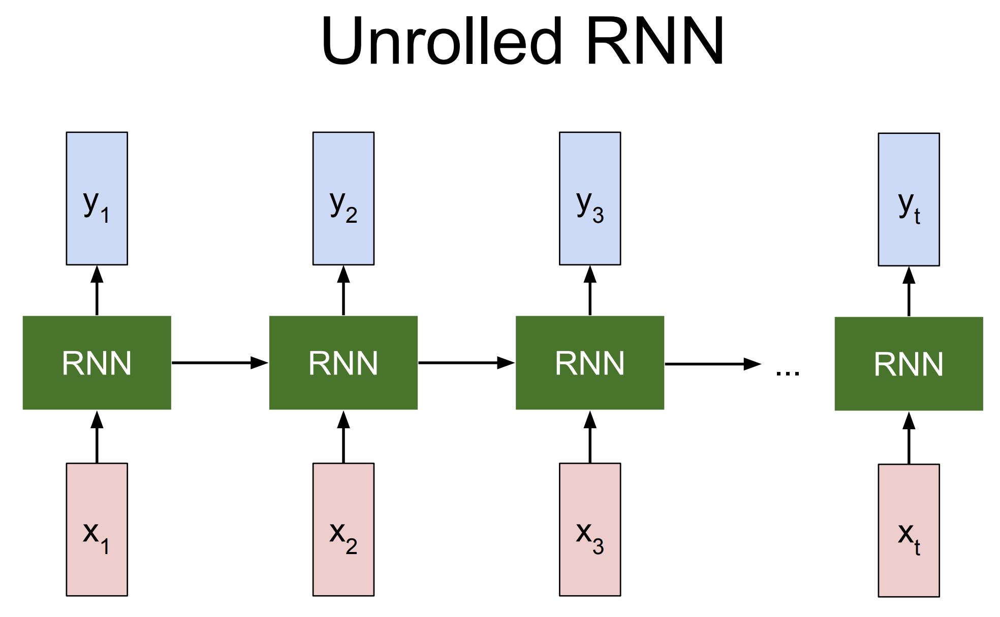

1.
BỐI CẢNH RA ĐỜI
Từ bài toán chuỗi đến giới hạn của RNN/LSTM
DNN
→
Seq2Seq
→
RNN/LSTM
→
Attention
→
Transformer
▼
2.1 · Bài toán
Sequence Transduction
Ánh xạ một chuỗi đầu vào thành một chuỗi đầu ra
I
love
machine
learning
Tôi
yêu
học
máy
Input / output có độ dài thay đổi
Thứ tự token rất quan trọngQuan hệ xa trong câu cần được giữ lại
DNN truyền thống không phù hợp: yêu cầu input/output có kích thước cố định, trong khi ngôn ngữ là chuỗi có độ dài biến đổi.
Sequence transduction là bài toán nền tảng trong NLP: dịch máy, tóm tắt văn bản, nhận dạng giọng nói, chatbot.
Ví dụ khác: English → French, text → speech, câu hỏi → câu trả lời.
Điểm chung: input và output đều là chuỗi, nhưng không nhất thiết cùng độ dài.
DNN feed-forward truyền thống (MLP) yêu cầu vector input cố định — không phù hợp với dữ liệu chuỗi.
2.2 · Kiến trúc
Seq2Seq: Encoder–Decoder
x₁
x₂
x₃
x₄
Input
Encoder
c
Decoder
y₁
y₂
y₃
Output
✓ Xử lý được chuỗi có độ dài khác nhau
✗ Toàn bộ input bị nén vào một vector cố định
Encoder: đọc từng token đầu vào (thường dùng RNN), tạo ra context vector c — vector duy nhất đại diện cho toàn bộ câu input.
Decoder: từ vector c, sinh từng token đầu ra, token sau phụ thuộc token trước (autoregressive).
Ưu điểm: giải quyết được vấn đề input/output có độ dài khác nhau.
Nhược điểm chính: bottleneck — context vector c có kích thước cố định, không thể chứa đầy đủ thông tin của câu dài. Đây là một trong những động lực chính dẫn đến attention.
2.3 · Recurrent Neural Network
RNN

$$ h_t = f_W(h_{t-1}, x_t) $$
Hidden state \(h_t\) mang thông tin từ các token trước đó.
Tại mỗi bước \(t\), mạng nhận input \(x_t\) và hidden state trước đó \(h_{t-1}\) để tính \(h_t\) mới.
Muốn tính \(h_t\) thì phải chờ \(h_{t-1}\) — xử lý tuần tự không thể song song hóa.
RNN là bước tiến lớn: lần đầu tiên mô hình có thể xử lý chuỗi bằng cách duy trì trạng thái ẩn (hidden state).
h_t phụ thuộc vào h_{t-1} và x_t hiện tại — đây là cơ chế "nhớ".
Công thức đơn giản nhưng mạnh mẽ: tanh là hàm kích hoạt phi tuyến, W_x và W_h là ma trận trọng số học được.
Vấn đề: khi chuỗi dài, gradient qua nhiều bước thời gian bị suy giảm (vanishing gradient), khiến mô hình khó học quan hệ xa.
Ngoài ra, sequential processing có nghĩa là không thể tính h_t song song — mỗi bước phải đợi bước trước.
2.4 · Long Short-Term Memory
LSTM
Thêm cell state và các cổng điều khiển:
Forget gate — quyết định thông tin nào bị loại bỏ
Input gate — quyết định thông tin mới nào được thêm vào
Output gate — quyết định đầu ra tại bước hiện tại
Giảm vanishing gradient , giữ long-term dependencies tốt hơn RNN.
LSTM (Hochreiter & Schmidhuber, 1997) giải quyết vanishing gradient bằng cơ chế cell state và gate.
Cell state c_t hoạt động như "đường cao tốc" cho gradient — thông tin có thể chảy qua nhiều bước thời gian mà không bị suy giảm.
Forget gate f_t: sigmoid, output ∈ [0,1], quyết định giữ lại bao nhiêu từ cell state cũ.
Input gate i_t: sigmoid, quyết định thông tin mới nào được ghi vào cell state.
Output gate o_t: sigmoid, quyết định phần nào của cell state được output.
Công thức c_t = f_t ⊙ c_{t-1} + i_t ⊙ c̃_t là trọng tâm: phép cộng (thay vì nhân) giúp gradient không bị triệt tiêu.
Dù tốt hơn RNN, LSTM vẫn xử lý tuần tự — mỗi token vẫn phải đợi token trước. Đây là giới hạn mà Transformer nhắm đến giải quyết.
2.5 · Phân tích
Giới hạn của RNN / LSTM
Giới hạn
Nguyên nhân
Hệ quả
Xử lý tuần tự
\(h_t\) phụ thuộc \(h_{t-1}\)
Khó song song hóa, train chậm
Đường truyền thông tin dài
Token xa phải đi qua nhiều bước
Long-term dependencies suy giảm
Bottleneck context vector
Seq2Seq nén cả câu vào một vector
Câu dài dễ mất thông tin
Vanishing gradient
Gradient qua nhiều bước thời gian
Khó học quan hệ xa trong chuỗi
Khó scale
RNN không tận dụng GPU tốt như attention
Hạn chế khi dữ liệu / model lớn
(1) Sequential processing là giới hạn lớn nhất: GPU được thiết kế để tính toán song song, nhưng RNN/LSTM buộc phải xử lý từng bước.
(2) Long-range dependencies: dù LSTM có cell state, thông tin từ token đầu câu đến token cuối vẫn phải đi qua nhiều cổng, dễ bị suy hao.
(3) Bottleneck: context vector c là điểm nghẽn thông tin — toàn bộ ý nghĩa của câu input phải được nén vào một vector. Với câu dài 50+ token, điều này gần như không thể.
(4) Vanishing gradient: dù LSTM giảm thiểu, nhưng không loại bỏ hoàn toàn. Gradient vẫn suy giảm theo cấp số nhân qua các bước thời gian.
(5) Scale: attention có độ phức tạp O(1) về đường truyền tín hiệu giữa hai vị trí bất kỳ, trong khi RNN là O(n). Điều này đặc biệt quan trọng khi huấn luyện trên tập dữ liệu lớn.
Thay vì nén toàn bộ input vào một vector cố định…
Nếu tại mỗi bước sinh token,
yt
x₁
x₂
x₃
x₄
x₅
Đây là ý tưởng dẫn đến Bahdanau Attention (2015), rồi sau đó là Transformer (2017).
Câu hỏi then chốt: thay vì nén toàn bộ input thành một vector cố định (context vector bottleneck), điều gì sẽ xảy ra nếu tại mỗi bước sinh token, decoder có thể "nhìn" vào toàn bộ encoder states và tự quyết định phần nào quan trọng?
Đây chính là ý tưởng của attention mechanism.
Bahdanau et al. (2015) lần đầu áp dụng attention cho dịch máy — decoder tại mỗi bước tính weighted sum của tất cả encoder hidden states, với trọng số (attention weights) được học.
Tuy nhiên, Bahdanau attention vẫn dùng RNN làm encoder và decoder — tức là vẫn sequential.
Transformer (Vaswani et al., 2017) loại bỏ hoàn toàn RNN, chỉ dùng attention (Self-Attention) — đây là bước nhảy vọt.
2.
ATTENTION TRƯỚC
Bahdanau Attention, 2014 · Neural Machine Translation
Seq2Seq
→
Dynamic
→
Attention
▼
Trước Transformer, Attention đã xuất hiện trong neural machine translation. Transformer không phát minh Attention từ con số 0, mà đưa Attention thành cơ chế trung tâm và loại bỏ recurrence.
3.1 · Phân tích
Vấn đề của Seq2Seq ban đầu
x₁
x₂
x₃
x₄
x₅
Encoder
c
information
bottleneck
Decoder
y₁
y₂
y₃
Câu càng dài → càng nhiều thông tin bị ép vào một vector cố định → dễ mất thông tin.
Seq2Seq ban đầu (Sutskever et al., 2014) có một điểm yếu kiến trúc: toàn bộ câu nguồn phải được nén vào một context vector c duy nhất. Vector này có kích thước cố định (vd: 512 chiều). Khi câu dài 50+ token, một vector 512 chiều không thể chứa đầy đủ ngữ nghĩa của toàn bộ câu — đây chính là information bottleneck.
3.2 · Ý tưởng
Bahdanau Attention
Thay vì dùng một context vector cố định…
h₁
h₂
h₃
h₄
h₅
c₁
c₂
c₃
y₁
y₂
y₃
Context vector không còn cố định: \(c_1, c_2, \dots, c_i\) thay đổi theo từng bước sinh token.
Attention ở đây nghĩa là decoder không phải nhớ tất cả qua một vector duy nhất. Khi sinh từng từ, nó được phép hỏi lại encoder: ở bước này tôi nên tập trung vào phần nào của câu gốc?
3.3 · Cơ chế
Encoder–Decoder với Attention
Decoder state si−1
compute alignment scores
h₁
h₂
h₃
h₄
h₅
α₀.₁
α₀.₂
α₀.₃
α₀.₄
α₀.₅
\(c_i = \alpha_{i,1}h_1 + \alpha_{i,2}h_2 + \alpha_{i,3}h_3 + \dots + \alpha_{i,T}h_T\)
Decoder không chọn một hidden state duy nhất, mà lấy tổng có trọng số của toàn bộ encoder states.
Encoder (BiRNN) tạo ra một hidden state hⱼ cho mỗi vị trí j trong câu nguồn. Decoder tại bước i dùng state s_{i-1} để so khớp với từng hⱼ, tính alignment score → softmax thành attention weights α_{i,j} → context vector c_i là tổng có trọng số của các hⱼ.
3.4 · Công thức
Alignment Score
Additive attention (Bahdanau): \(e_{ij} = v_a^{\mathsf{T}} \tanh(W_a s_{i-1} + U_a h_j)\)
Alignment function a là một mạng neural nhỏ (feed-forward network). Bahdanau dùng additive attention: score = v^T tanh(W s + U h). Khác với scaled dot-product attention trong Transformer. Luồng: score → softmax → attention weights → weighted sum = context vector.
3.5 · Ví dụ trực quan
Soft Alignment
Input: I love cats → Output: Tôi yêu mèo
Khi sinh "Tôi" → chú ý mạnh nhất vào "I"
Khi sinh "yêu" → chú ý mạnh nhất vào "love"
Khi sinh "mèo" → chú ý mạnh nhất vào "cats"
Attention tạo ra alignment mềm giữa source tokens và target tokens.
Khi decoder sinh từ “mèo”, nó không cần nén toàn bộ câu “I love cats” vào một vector cố định. Nó có thể phân bổ attention mạnh nhất vào “cats”, rồi dùng thông tin đó để sinh từ phù hợp. Đây là soft alignment — mỗi output token có thể “nhìn” vào nhiều input token với trọng số khác nhau.
3.6 · Đánh giá
Bahdanau Attention: Điểm tốt & Điểm yếu
Bahdanau Attention giải quyết
Vẫn còn hạn chế
Không ép toàn bộ input vào một vector cố định
Encoder vẫn là BiRNN
Decoder nhìn lại toàn bộ input ở mỗi bước
Decoder vẫn sinh tuần tự
Tốt hơn với câu dài
Khó parallel hóa toàn bộ
Tạo alignment mềm giữa source và target
Vẫn có đường truyền dài qua RNN
Là nền móng cho attention trong Transformer
Chưa loại bỏ recurrence
Bahdanau Attention giải quyết bottleneck của Seq2Seq, nhưng chưa giải quyết triệt để sequential processing .
Bahdanau Attention (2014) là bước đột phá: lần đầu tiên attention được dùng trong NMT để giải quyết information bottleneck. Nhưng mô hình vẫn dùng BiRNN cho encoder và RNN cho decoder. Transformer kế thừa ý tưởng attention nhưng loại bỏ recurrence hoàn toàn — dùng self-attention để xử lý toàn bộ chuỗi song song.
3.
KIẾN TRÚC
Từ self-attention đến encoder-decoder stack
Động lực
→
Attention core
→
Encoder / Decoder
▼
3.1 · Động lực
Transformer Giải Quyết Điều Gì?
Bahdanau Attention đã giảm bottleneck, nhưng vẫn còn RNN ở lõi. Transformer xử lý toàn chuỗi bằng attention để giảm đường truyền thông tin và song song hóa training.
RNN / LSTM
Tuần tự: \(h_t\) phải chờ \(h_{t-1}\).
Quan hệ xa đi qua nhiều bước, dễ suy giảm gradient.
x1
x2
x3
x4
wait · wait · wait
Bahdanau Attention
Decoder nhìn lại input thay vì dùng một vector cố định.
Nhưng encoder/decoder vẫn chạy tuần tự bằng RNN.
y_t
Transformer
Mọi token nối trực tiếp với mọi token khác qua self-attention.
Không cần recurrence trong encoder/decoder layer.
Điểm chốt: Transformer không chỉ thêm attention; nó thay cách truyền thông tin bên trong mô hình bằng các phép toán ma trận song song.
3.2A · Big picture
Encoder-Decoder Stack
Transformer gốc dùng \(N=6\) encoder layers và \(N=6\) decoder layers. Các layer cùng cấu trúc nhưng không chia sẻ trọng số.
Encoder x6
Self-Attention
FFN + AddNorm
Memory H
Decoder x6
Masked Self-Attn
Cross-Attention
FFN + AddNorm
d_model = 512 h = 8 d_k = d_v = 64 d_ff = 2048
3.2B · Memory H
Encoder Memory Là Gì?
Encoder không trả về một vector duy nhất. Nó trả về một ma trận memory gồm một vector ngữ cảnh cho từng token nguồn.
h_I [0.10, 0.30, ..., -0.20]
h_love [0.40, -0.10, ..., 0.60]
h_cats [0.80, 0.20, ..., 0.10]
Encoder output: \(H=[h_1, h_2, ..., h_L]\), mỗi \(h_i\) vẫn có kích thước \(d_{model}=512\).
Decoder dùng H làm Key/Value trong cross-attention.
3.2C · Ví dụ
Ví Dụ Big Picture: Dịch “I Love Cats”
Source side
I · love · cats
Encoder tạo memory: \(h_I, h_{love}, h_{cats}\).
Target side
<START> Tôi yêu ___
Decoder đang cần dự đoán token tiếp theo.
Memory H → Cross-Attention → mèo
3.4A · Q-K-V
Q, K, V: Ba Vai Trò Khác Nhau
Query Token hiện tại đang cần thông tin gì?
Key Mỗi token khác có nhãn gì để so khớp?
Value Nội dung thực sự sẽ được lấy về.
Attention = so Query với các Key, rồi lấy tổng có trọng số của Value.
3.4B · Q-K-V
Q, K, V Không Phải Ba Input Riêng
Trong self-attention, cả Q, K và V đều được sinh ra từ cùng ma trận input \(X\), chỉ khác ma trận chiếu.
1 Input \(X\)
2 Query \(Q=XW_Q\)
3 Key \(K=XW_K\)
4 Value \(V=XW_V\)
Ba phép chiếu riêng giúp mô hình tách “cần gì”, “so khớp bằng gì” và “lấy nội dung gì”.
3.4C · Shape
Shape Của Một Attention Head
\(X\) \(L \times 512\)
\(W_Q,W_K,W_V\) \(512 \times 64\)
\(Q,K,V\) \(L \times 64\)
\(QK^T\) \(L \times L\)
Với Transformer base: \(d_{model}=512\), \(h=8\), nên mỗi head có \(d_k=d_v=64\).
3.4D · Ví dụ
Ví Dụ Q-K-V: “it” Hỏi “animal”
The animal didn't cross because it was tired
Query từ “it” “Tôi đang chỉ ai?”
Key/Value của “animal” Key khớp mạnh; Value chứa nội dung “con vật”.
Q_it → K_animal cao → lấy nhiều V_animal
3.5A · Scaled dot-product
\(QK^T\) Tạo Score Matrix
\( \operatorname{Attention}(Q,K,V)=\operatorname{softmax}\left(\frac{\color{#2d5bb9}{QK^T}}{\sqrt{d_k}}\right)V \)
Mỗi ô \([i,j]\) là mức độ query token i khớp với key token j trước softmax.
I love cats today I 2.4 0.7 0.5 0.1 love 0.6 1.5 2.1 0.2 cats 0.2 1.1 2.5 0.1 today 0.1 0.4 0.3 2.3
Hàng “love” là query đang xét; score cao ở “cats” nghĩa là “love” lấy nhiều thông tin từ “cats”.
3.5B · Scale
Vì Sao Chia \(\sqrt{d_k}\)?
\( \operatorname{Attention}(Q,K,V)=\operatorname{softmax}\left(\frac{QK^T}{\color{#2d5bb9}{\sqrt{d_k}}}\right)V \)
Không scale
Softmax dễ bão hòa, gradient yếu.
Có scale
Phân phối mềm hơn, học ổn định hơn.
3.5C · Softmax
Softmax Được Tính Theo Từng Hàng
\( \operatorname{Attention}(Q,K,V)=\color{#2d5bb9}{\operatorname{softmax}\left(\frac{QK^T}{\sqrt{d_k}}\right)}V \)
Mỗi query token có một phân phối attention riêng; tổng mỗi hàng sau softmax bằng 1.
I love cats today I 0.70 0.15 0.10 0.05 love 0.12 0.28 0.52 0.08 cats 0.04 0.22 0.68 0.06 today 0.05 0.12 0.10 0.73
3.5D · Ví dụ
Weights × V Tạo Context Vector
\( \operatorname{Attention}(Q,K,V)=\operatorname{softmax}\left(\frac{QK^T}{\sqrt{d_k}}\right)\color{#2d5bb9}{V} \)
\(context_{love}=0.12V_I+0.28V_{love}+0.52V_{cats}+0.08V_{today}\)
\(V_I\) 0.12
\(V_{love}\) 0.28
\(V_{cats}\) 0.52, đóng góp lớn nhất
\(V_{today}\) 0.08
Toy numbers minh họa, không phải output từ model thật.
3.6A · Multi-head
Một Head Chỉ Là Một Góc Nhìn
Nếu chỉ có một attention map, nhiều loại quan hệ trong câu bị trộn vào cùng một bảng trọng số.
The animal cross street it was tired
Một head có thể phải vừa học tham chiếu đại từ, vừa học cú pháp, vừa học quan hệ cục bộ.
3.6B · Multi-head
8 Head Song Song
Head 1 it → animal
Head 2 it → was/tired
Head 3 cross → street
Head 4 local syntax
Head 5 phrase boundary
Head 6 modifier
Head 7 position
Head 8 other pattern
512 chiều → 8 × 64 chiều
3.6C · Multi-head
Concat Rồi Trộn Bằng \(W^O\)
head1 head2 ... head8 → Concat 512 → \(W^O\)
Nếu chỉ concat mà không có \(W^O\), các head chưa được trộn thông tin với nhau.
3.6D · Ví dụ
Ví Dụ Multi-Head: Một Câu, Nhiều Quan Hệ
Head A: local / identity
Q\K The animal it tired The 0.76 0.14 0.05 0.05 animal 0.12 0.71 0.10 0.07 it 0.04 0.16 0.67 0.13 tired 0.03 0.08 0.24 0.65
Head B: reference / semantic
Q\K The animal it tired The 0.31 0.42 0.15 0.12 animal 0.07 0.58 0.25 0.10 it 0.04 0.82 0.08 0.06 tired 0.04 0.39 0.37 0.20
Head A giữ cấu trúc cục bộ/identity. Head B bắt quan hệ tham chiếu: “it” attend mạnh vào “animal”, “tired” nhìn cả “it” và “animal”.
3.7A · Positional encoding
Attention Không Tự Biết Thứ Tự
dog bites man dogpos0 bitespos1 manpos2
man bites dog manpos0 bitespos1 dogpos2
Cùng token nhưng đổi vị trí sẽ đổi nghĩa. Transformer cần tín hiệu vị trí để phân biệt vai trò trong câu.
3.7B · Không có PE
Không Có PE: Score Chỉ Dựa Trên Token
dog bites man
Q\K dog bites man dog +0.35 +0.04 +0.05 bites +0.04 +0.41 +0.01 man +0.05 +0.01 +0.46
man bites dog
Q\K man bites dog man +0.46 +0.01 +0.05 bites +0.01 +0.41 +0.04 dog +0.05 +0.04 +0.35
Toy pre-softmax score. Không có PE, matrix chủ yếu chỉ bị hoán vị theo token; mô hình chưa có tín hiệu riêng để biết dog đang làm chủ ngữ hay tân ngữ.
3.7C · Có PE
Có PE: Cùng Token, Khác Vị Trí, Khác Score
dog bites man + PE
Q\K dog bites man dog +1.70 +1.52 +1.38 bites +1.52 +2.73 +2.35 man +1.38 +2.35 +2.84
man bites dog + PE
Q\K man bites dog man +2.72 +2.09 +1.50 bites +2.09 +2.73 +1.78 dog +1.50 +1.78 +1.59
Toy pre-softmax score. Có PE, attention score thay đổi theo vị trí: cùng token “dog” nhưng đứng đầu câu và cuối câu tạo tương tác khác nhau.
3.7D · PE vector
Embedding + PE Tạo Vector Theo Vị Trí
dog ở vị trí 0 Embedding(dog) + PE(0)
dog ở vị trí 2 Embedding(dog) + PE(2)
khác nhau cùng token, khác role trong câu
sin/cos nhiều tần số tạo dấu vân tay vị trí
3.7E · Add, không concat
Vì Sao Cộng PE Vào Embedding?
Add \(512 + 512 \rightarrow 512\)
Giữ nguyên kích thước để residual connection hoạt động nhất quán.
Concat \(512 || 512 \rightarrow 1024\)
Tăng dimension, tăng chi phí và làm lệch interface giữa các layer.
Trong paper gốc, sinusoidal PE được cộng trực tiếp vào token embedding.
3.8A · Encoder
Encoder Self-Attention Là Unmasked
Trong encoder, mọi token nguồn được nhìn toàn bộ câu nguồn, cả bên trái lẫn bên phải.
Tôi đang training nó Tôi ✓ ✓ ✓ ✓ nó ✓ ✓ ✓ ✓
3.8B · Add & Norm
Add & Norm Giữ Training Ổn Định
x → Sublayer(x) → x + Sublayer(x) → LayerNorm
Residual connection tạo đường đi tắt cho gradient; LayerNorm chuẩn hóa từng token.
3.8C · FFN
FFN Xử Lý Từng Token Độc Lập
1 Token 1 512 → 2048 → 512
2 Token 2 cùng FFN
3 Token 3 cùng FFN
4 Token L song song
Attention trộn thông tin giữa token; FFN biến đổi phi tuyến từng vị trí.
3.8D · Ví dụ
Ví Dụ Encoder: “nó” Tham Chiếu “mạng nơ-ron”
Tôi đang training mạng nơ-ron bằng dữ liệu nó có tốt không
Query: nó nó dữ liệu mạng nơ-ron khác attention 0.05 0.01 0.85 0.09
Before “nó” = đại từ chung chung
After encoder “nó” mang ngữ cảnh mạng nơ-ron
3.9A · Decoder
Decoder Dùng Shifted-Right Target
Decoder input <START> Tôi yêu
Ở bước hiện tại, decoder chỉ được dùng các token đã có trước đó.
3.9B · Mask
Masked Self-Attention Chặn Tương Lai
Pre-softmax + mask
Q\K <S> Tôi yêu mèo <S> 1.4 masked masked masked Tôi 0.8 1.6 masked masked yêu 0.7 1.2 1.7 masked mèo 0.4 0.9 1.1 1.8
After row-wise softmax
Q\K <S> Tôi yêu mèo <S> 1.00 blocked blocked blocked Tôi 0.31 0.69 blocked blocked yêu 0.18 0.31 0.51 blocked mèo 0.12 0.20 0.25 0.43
Future token bị loại khỏi phân phối; các ô còn lại được normalize lại. Không dùng số 0 cho ô hợp lệ.
3.9C · Cross-attention
Cross-Attention Qua Từng Bước Dịch
Mỗi target token dùng Query khác nhau để nhìn lại encoder memory của `I love cats`.
Target step \ Source I love cats sinh “Tôi” 0.82 0.12 0.06 sinh “yêu” 0.08 0.84 0.08 sinh “mèo” 0.05 0.15 0.80
Khi sinh “Tôi”, decoder nhìn mạnh vào “I”; khi sinh “yêu”, nhìn “love”; khi sinh “mèo”, nhìn “cats”. Đây là soft alignment trong decoder.
3.9D · Ví dụ
Linear + Softmax Sinh “mèo”
<S> Tôi yêu → mèo
3.10A · Recap
Architecture Map
1 Source I love cats
2 Encoder self-attention
3 Memory H
4 Target <S> Tôi yêu
5 Mask không nhìn tương lai
6 Cross hỏi encoder
7 Softmax xác suất token
8 Output mèo
3.10B · Recap
Chốt Phần Kiến Trúc
Component Làm gì Ví dụ trực quan
Q-K-V Tách nhu cầu, nhãn so khớp, nội dung it hỏi animal Scaled Dot-Product Tạo heatmap attention love attend cats Multi-Head Nhiều góc nhìn song song it→animal, it→tired Positional Encoding Thêm tín hiệu thứ tự dog ở vị trí 0 khác dog ở vị trí 2 Encoder / Decoder Hiểu source, sinh target I love cats → Tôi yêu mèo
Từ đây có thể chuyển sang phần huấn luyện và kết quả: kiến trúc này học nhanh hơn và đạt chất lượng tốt hơn như thế nào?
4.
HUẤN LUYỆN
Transformer không chỉ đẹp về kiến trúc,
Architecture ↓
Training Recipe ↓
Results ↓
Ablation
▼
5.1 · Training setup
Training Setup: Mô Hình Học Như Thế Nào?
Training Transformer trong dịch máy là học xác suất chuỗi đích dựa trên source và các target token trước đó.
Source
I
love
cats
Decoder input
<START>
Tôi
yêu
mèo
Expected output
Tôi
yêu
mèo
<END>
Mỗi vị trí trong decoder học dự đoán token tiếp theo. Khi training, target đã biết sẵn nhưng masked self-attention vẫn chặn token tương lai.
Ở training, ta dùng teacher forcing: đưa target đã shifted-right vào decoder. Mô hình vẫn phải dùng mask để không nhìn thấy token cần dự đoán ở tương lai.
5.2 · Optimization
Optimization: Adam + Learning Rate Schedule
Optimizer: Adam
β₁ = 0.9
β₂ = 0.98
ε = 10⁻⁹
Paper dùng Adam với tham số hơi khác mặc định phổ biến.
Learning rate schedule
warmup 4000
learning rate
step
\(lrate=d_{model}^{-0.5}\cdot min(step^{-0.5}, step\cdot warmup^{-1.5})\)
Warmup giúp training ổn định ở giai đoạn đầu; decay giúp mô hình hội tụ về sau.
5.3 · Regularization
Regularization: Dropout + Label Smoothing
Dropout
P_drop = 0.1
Áp dụng trong attention, FFN và embeddings.
Label smoothing
ε_ls = 0.1 : giảm overconfidence.
Dropout giảm phụ thuộc vào một đường biểu diễn. Label smoothing giảm việc mô hình quá tự tin vào một nhãn duy nhất.
Regularization rất quan trọng trong kết quả ablation: tắt dropout làm BLEU giảm rõ rệt; tắt label smoothing có thể làm PPL tốt hơn nhưng BLEU giảm.
5.4 · Dataset & metrics
Dataset & Metrics
WMT 2014 EN-DE
4.5M sentence pairs
~37K BPE vocabulary
WMT 2014 EN-FR
36M sentence pairs
~32K WordPiece vocabulary
Metrics
BLEU : chất lượng dịch
FLOPs : chi phí tính toán
PPL : độ bất định
F1 : parsing
Kết quả không chỉ đo chất lượng, mà còn đo chi phí tính toán và khả năng tổng quát.
5.5A · Main results
Main Results: BLEU Và Training Cost
28.4
BLEU
41.8
BLEU
12h / 3.5d
Transformer-base / big
Transformer đạt chất lượng dịch cao, đồng thời tận dụng song song hóa để giảm chi phí training.
5.5B · So sánh với mô hình trước đó
Main Results: Transformer So Với Các Model Khác
Bảng kết quả trong paper cho thấy Transformer cải thiện BLEU trên WMT 2014, đồng thời dùng chi phí huấn luyện thấp hơn nhiều hệ ensemble trước đó.
Model
BLEU
Training Cost (FLOPs)
EN-DE
EN-FR
EN-DE
EN-FR
ByteNet 23.75 — — — Deep-Att + PosUnk — 39.2 — 1.0 · 1020 GNMT + RL 24.6 39.92 2.3 · 1019 1.4 · 1020 ConvS2S 25.16 40.46 9.6 · 1018 1.5 · 1020 MoE 26.03 40.56 2.0 · 1019 1.2 · 1020 Deep-Att + PosUnk Ensemble — 40.4 — 8.0 · 1020 GNMT + RL Ensemble 26.30 41.16 1.8 · 1020 1.1 · 1021 ConvS2S Ensemble 26.36 41.29 7.7 · 1019 1.2 · 1021 Transformer (base) 27.3 38.1 3.3 · 1018 — Transformer (big) 28.4 41.8 2.3 · 1019 —
Điểm đáng chú ý: Transformer-big đạt BLEU cao nhất, còn Transformer-base đã vượt nhiều model trước đó với FLOPs thấp.
Slide này dùng để đọc paper table ở mức cao: không cần đi từng dòng, chỉ nhấn mạnh hai dòng Transformer và nhóm ensemble có chi phí lớn.
5.6 · Ablation study
Ablation Study: Thành Phần Nào Quan Trọng?
Thay đổi Kết quả / ý nghĩa
h = 1 BLEU giảm xuống 24.9: một head là không đủ. h = 32, d_k = 16 BLEU 25.4: quá nhiều head làm mỗi head quá nhỏ. d_k = 16 BLEU 25.1: không gian key quá hẹp. d_k = 32 BLEU 25.4: vẫn thấp hơn cấu hình chuẩn. d_ff = 4096 BLEU tăng lên 26.2: FFN rộng hơn giúp biểu diễn mạnh hơn. Tắt dropout BLEU giảm xuống 24.6: regularization là cần thiết. Tắt label smoothing PPL tốt hơn nhưng BLEU giảm: mô hình quá tự tin không hẳn dịch tốt hơn.
Multi-head attention, kích thước mô hình và regularization đều đóng vai trò quan trọng.
Ablation study trả lời câu hỏi: nếu thay đổi từng thành phần thì chất lượng có giảm không? Kết quả cho thấy số head, d_k, d_ff, dropout và label smoothing đều ảnh hưởng rõ.
5.7 · Tổng kết
Tổng Kết Phần Huấn Luyện Và Kết Quả
1. Stable training Adam + warmup schedule giúp giai đoạn đầu ổn định hơn.
2. Generalization Dropout và label smoothing giúp mô hình tổng quát tốt hơn.
3. Strong results Transformer-big đạt 28.4 BLEU EN-DE và 41.8 BLEU EN-FR.
4. Ablation Multi-head, d_k, d_ff và regularization đều quan trọng.
Architecture + Training recipe + Results → Modern LLMs
Từ đây, Transformer không chỉ là một model dịch máy, mà trở thành nền tảng cho các mô hình ngôn ngữ hiện đại.
5.
PHÂN TÍCH
Từ một kiến trúc dịch máy
Transformer 2017 ↓
BERT / GPT / T5 ↓
Modern LLMs
▼
6.1 · Ưu điểm
Ưu Điểm Của Transformer
Ưu điểm Ý nghĩa
Parallelization Không phụ thuộc tuần tự như RNN; phù hợp phép nhân ma trận lớn. Short path length Mọi token kết nối trực tiếp qua attention. Multi-head attention Học nhiều kiểu quan hệ cùng lúc. Interpretability Có thể trực quan hóa attention weights. Scalability Tăng dữ liệu/tham số/tính toán thường cải thiện hiệu năng.
RNN: token 1 → token 2 → token 3 → token 4
vs
Transformer: token 1 ↔ token 4
Transformer phù hợp với GPU vì phần lớn tính toán là phép nhân ma trận lớn.
6.2 · Giới hạn
Nhược Điểm Và Giới Hạn
Chi phí attention tăng nhanh
Self-attention xét mọi cặp token.
Tốn GPU/VRAM khi context dài.
Huấn luyện mô hình lớn đắt đỏ.
Nhạy với hyperparameters và regularization.
Điểm mạnh attention cũng là điểm tốn kém: mọi token nhìn mọi token.
6.3 · Scaling
Vì Sao Transformer Scale Tốt?
Lý do kiến trúc
Computation dạng matrix multiplication.
Không có sequential bottleneck như RNN.
Có thể tăng depth, width, heads và data.
Self-attention học quan hệ xa hiệu quả.
Phù hợp GPU/TPU và distributed training.
Model size trajectory
65M
→
213M
→
billions
→
trillions
Transformer mở đường cho scaling law: tăng data, compute và model size thường làm mô hình mạnh hơn.
6.4 · Transformer family
Từ Transformer Gốc Đến Các Họ Mô Hình Hiện Đại
Original Transformer
Encoder-only
BERT
Decoder-only
GPT
Encoder-Decoder
T5 / mT5
Cùng một ý tưởng Transformer, nhưng có thể tái cấu hình cho nhiều loại nhiệm vụ khác nhau.
6.5 · Architecture variants
Encoder-only, Decoder-only, Encoder–Decoder
Kiến trúc Ví dụ Cách học Phù hợp với
Encoder-only BERT Masked language modeling Hiểu câu, classification, retrieval Decoder-only GPT Autoregressive language modeling Sinh văn bản, chat, completion Encoder–Decoder T5 / mT5 Text-to-text Dịch, tóm tắt, QA có input-output rõ
Không phải LLM nào cũng dùng toàn bộ Encoder–Decoder gốc. Nhiều mô hình hiện đại chỉ dùng một phần của kiến trúc.
6.6 · Modern improvements
Các Cải Tiến Hiện Đại
Cải tiến Ý tưởng
RoPE Positional encoding tốt hơn cho context dài. Grouped Query Attention Giảm chi phí KV cache. FlashAttention Tính attention tiết kiệm bộ nhớ hơn. MoE Chỉ kích hoạt một phần expert để scale hiệu quả. Long-context attention Xử lý chuỗi dài hơn.
Transformer core +
better position +
efficient attention +
MoE →
Modern LLMs
Kiến trúc hiện đại không bỏ Transformer, mà tối ưu các điểm nghẽn của nó.
6.7 · Tổng kết
Vì Sao Transformer Trở Thành Nền Tảng LLM?
Parallel Loại bỏ recurrence, train song song hơn.
Long-range Self-attention học quan hệ xa trực tiếp.
Multi-pattern Multi-head học nhiều pattern cùng lúc.
Scaling Nhiều data/compute/model size thường mạnh hơn.
Flexible Sinh ra BERT, GPT, T5 và nhiều LLM hiện đại.
Core idea Attention trở thành nguyên lý tổ chức của mô hình ngôn ngữ.
Seq2Seq →
Bahdanau Attention →
Transformer →
BERT / GPT / T5 →
Modern LLMs
Attention is not only a mechanism. It became the organizing principle of modern language models.